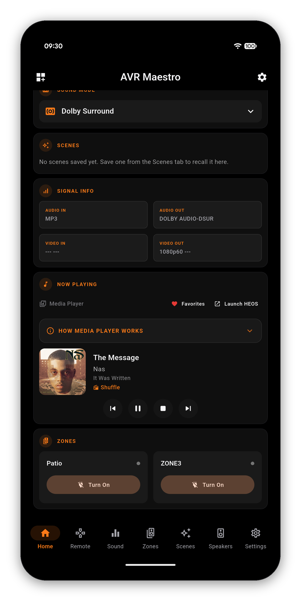
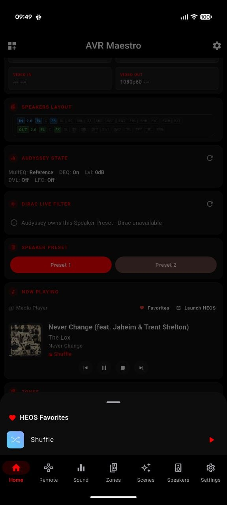

When your source reports metadata, AVR Maestro's Now Playing card puts the album art, the track and the transport right on your home screen - and hands off to HEOS for browsing, then takes back over the moment the music starts.


Getting started · Home Screen · Scenes · Custom Icons · Sound · Graphic EQ · Speakers · Why a control is locked · The Assistant · Home Automation · Home Assistant dashboard · Zones · Remote · Radio (FM/AM) · On-Screen Display · Settings · Languages · Volume Controls · Backup & Restore
One-time purchase, no ads, no subscriptions. Connect in under a minute.